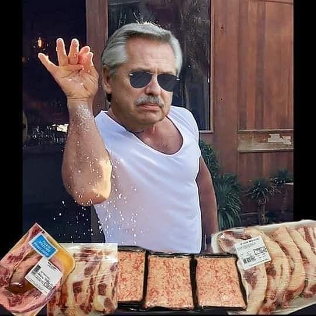

Alberto Fernandez's Imaginary Asado

Another Argie classic that's now impossible to buy.
Asado used to be the de-facto meal that all Argentinian families would eat every Sunday at lunch. A perfect excuse for the extended
family and friends to come visit on a weekend, it was usually served alongside a good bottle of wine and potato salad. However, years of Peronist
doctrine have rendered the asado a rare sight on the middle class household due to price increases. This is where Alberto, hereafter referred as
"Captain Beto" comes to the rescue with his imaginary variant of the dish.
Ingredients
- imagination
- peronism
- 1 lemon
Instructions
- Start your fire. Make a stack of dry wood sitting on top of a heap of pinecones under the left-hand side of your parrilla (a
cast-iron grill which can be adjusted to different heights). Don't use briquettes, which taint the meat (and severely damage your rep as an asador).
- Once the grill has heated up, give it a vigorous clean with newspaper to remove all yesterday's carbonised cow and arm yourself with the tools of
the asador - the shovel and rake - for moving embers around.
- When the flames and smoke of your initial fire have relented, you will have a pile of smouldering charcoal to the left of your grill, from which
you rake across glowing embers to sit under the right.
- Lower the grill to 15cm above the smouldering bed of coals. Waiting in the wings are your imaginary cuts of meat, very specific to the asado, so introduce
the biggest cuts first, starting with the imaginary tira de asado (short rib).
- It's impossible to overcook beef in Argentina, as the locals like it medium to well done. If the meat is good, they say, this
is the best way to cook it: low and slow. Since our meat is imaginary, just imagine it is of good quality and let it cook as much as you want.
- Next onto the parrilla are the imaginary achuras (offal). The entry-level offal is mollejas [moh-shay-has], sweetbreads that are grilled to
smokey crispness and served with a squeeze of lemon. Often these are the only achuras served, but in our recipe they can also be accompanied by
imaginary chinchulines [chin-choo-leen-ez] - intestines - and imaginary riñones [rin-yon-ez] - kidneys. The lemon juice has to be real, as imaginary
lemon trees have not yet been invented, no matter what that Fools Garden song may say.
- Once the imaginary meat is ready, your team of sous-chefs should have finished making your salads. Of course, a true Argentino doesn't need a side of salad
to justify his meat consumption (this is, after all, the country where vegetarians are served chicken) though an ensalada criolla - tomato, lettuce and
onion dressed with oil and white wine vinegar - cuts through the very real hunger that our imaginary asado can't really fight against.